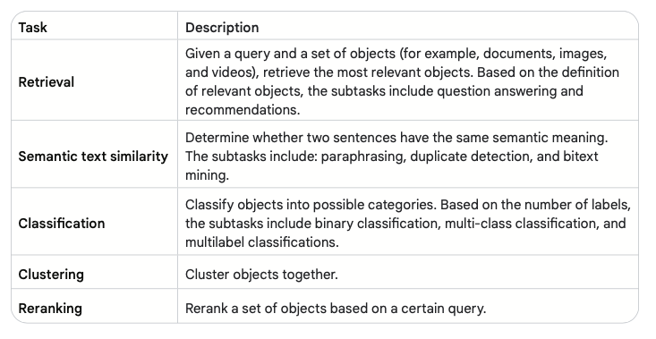

Vector Search
Definition
Full-text keyword search has been the lynchpin of modern IT systems for years.
However, if the key word is misspelled or described with a differently worded text, a traditional keyword search returns incorrect or no results.
This is where vector search is very powerful: it uses the vector or embedded semantic representation of documents.
Process
After you have a function that can compute embeddings of various items, you compute the embedding of the items of interest and store this embedding in a database. You then embed the incoming query in the same vector space as the items. Next, you have to find the best matches to the query. This process is analogous to finding the most ‘similar’ matches across the entire collection of searchable vectors: similarity between vectors can be computed using a metric such as euclidean distance, cosine similarity, or dot product.
Vector Search Algorithms
Introduction
The most straightforward way to find the most similar match is to run a traditional linear search by comparing the query vector with each document vector and return the one with the highest similarity. However, the runtime of this approach scales linearly (O(N)) with the amount of documents or items to search. This approach is unacceptably slow for most use cases involving several millions of documents or more. Using approximate nearest neighbour (ANN) search for that purpose is more practical. ANN is a technique for finding the closest points to a given point in a dataset with a small margin of error.
Locality Sensitive Hashing (LSH)
Locality sensitive hashing (LSH) 28 is a technique for finding similar items in a large dataset. It does this by creating one or more hash functions that map similar items to the same hash bucket with high probability.
The number of hash functions/tables and buckets determine the search recall/speed tradeoff, as well as the false positive / true positive one. Having too many hash functions might cause similar items to different buckets, while too few might result in too many items falsely being hashed to the same bucket and the number of linear searches to increase.
from sklearn.neighbors import NearestNeighbors
from vertexai.language_models import TextEmbeddingModel
from lshashing import LSHRandom
import numpy as np
model = TextEmbeddingModel.from_pretrained("textembedding-gecko@004")
test_items= [
"The earth is spherical.",
"The earth is a planet.",
"I like to eat at a restaurant."]
query = "the shape of earth"
embedded_test_items = np.array([embedding.values for embedding in model.get_embeddings(test_items)])
embedded_query = np.array(model.get_embeddings([query])[0].values)
#Naive brute force search
n_neighbors=2
nbrs = NearestNeighbors(n_neighbors=n_neighbors, algorithm='brute').fit(embedded_test_items)
naive_distances, naive_indices = nbrs.kneighbors(np.expand_dims(embedded_query, axis = 0))
#algorithm- ball_tree due to high dimensional vectors or kd_tree otherwise
nbrs = NearestNeighbors(n_neighbors=n_neighbors, algorithm='ball_tree').fit(embedded_test_items)
distances, indices = nbrs.kneighbors(np.expand_dims(embedded_query, axis = 0))
#LSH
lsh_random_parallel = LSHRandom(embedded_test_items, 4, parallel = True)
lsh_random_parallel.knn_search(embedded_test_items, embedded_query, n_neighbors, 3, parallel = True)
#output for all 3 indices = [0, 1] , distances [0.66840428, 0.71048843] for the first 2 neighbours
#ANN retrieved the same ranking of items as brute force in a much scalable manner
FAISS
One of the FAISS (Facebook AI similarity search) implementations leverages the concept of hierarchical navigable small world (HNSW) 31 to perform vector similarity search in sub- linear (O(Logn)) runtime with a good degree of accuracy. A HNSW is a proximity graph with a hierarchical structure where the graph links are spread across different layers. The top layer has the longest links and the bottom layer has the shortest ones. As shown in Figure 9, the search starts at the topmost layer where the algorithm greedily traverses the graph to find the vertex most semantically similar to the query. Once the local minimum for that layer is found, it then switches to the graph for the closest vertex on the layer below.
ScaNN
The first step is the optional partitioning step during training: it uses one of the multiple algorithms available to partition the vector store into logical partitions/clusters where the semantically related are grouped together.
At query time ScaNN uses the user-specified distance measure to select the specified number of top partitions (a value specified by the user), and then executes the scoring step next.
Finally, as a last step the user can optionally choose to rescore the user specified top K number of results more accurately.
Vector Databases
Definition
Each vector database differs in its implementation, but the general flow is:
- An appropriate trained embedding model is used to embed the relevant data points as vectors with fixed dimensions.
- The vectors are then augmented with appropriate metadata and complementary information (such as tags) and indexed using the specified algorithm for efficient search.
- An incoming query gets embedded with the same model, and used to query and return specific amounts of the most semantically similar items and their associated unembedded content/metadata. Some databases might provide caching and pre-filtering (based on tags) and post-filtering capabilities (reranking using another more accurate model) to further enhance the query speed and performance.
Challenges
- Embeddings, unlike traditional content, can mutate over time. However, frequently updating the embeddings especially those trained on large amounts of data - can be prohibitively expensive.
- While embeddings are great at representing semantic information, sometimes they can be suboptimal at representing literal or syntactic information. This is especially true for domain-specific words or IDs.
Applications
Overview

RAG
Retrieval augmented generation (RAG) for Q&A is a technique that combines the best of both worlds from retrieval and generation. It first retrieves relevant documents from a knowledge base and then uses prompt expansion to generate an answer from those documents. Prompt expansion is a technique that when combined with database search can be very powerful. With prompt expansion the model retrieves relevant information from the database (mostly using a combination of semantic search and business rules), and augments the original prompt with it.
RAGs can help with a common problem with LLMs: their tendency to ‘hallucinate’